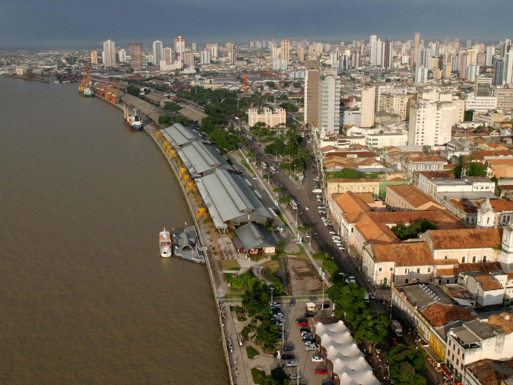

O Pará é um estado da Região Norte do Brasil, localizado na Amazônia, com capital em Belém. É um dos maiores estados do país em território e também um dos mais importantes da região amazônica. O estado possui grande biodiversidade e é cortado por rios importantes, como o Rio Amazonas. Sua economia é forte na mineração (principalmente ferro e bauxita), agropecuária, extrativismo vegetal e indústria. O Pará também tem papel importante no comércio e na exportação. A cultura paraense é muito rica e conhecida por festas tradicionais, como o Círio de Nazaré, uma das maiores manifestações religiosas do Brasil. A culinária também é marcante, com pratos típicos como o açaí, o tacacá e o pato no tucupi. Apesar da riqueza natural e econômica, o estado enfrenta desafios como desmatamento e desigualdade social, comuns na região amazônica.

Voltar